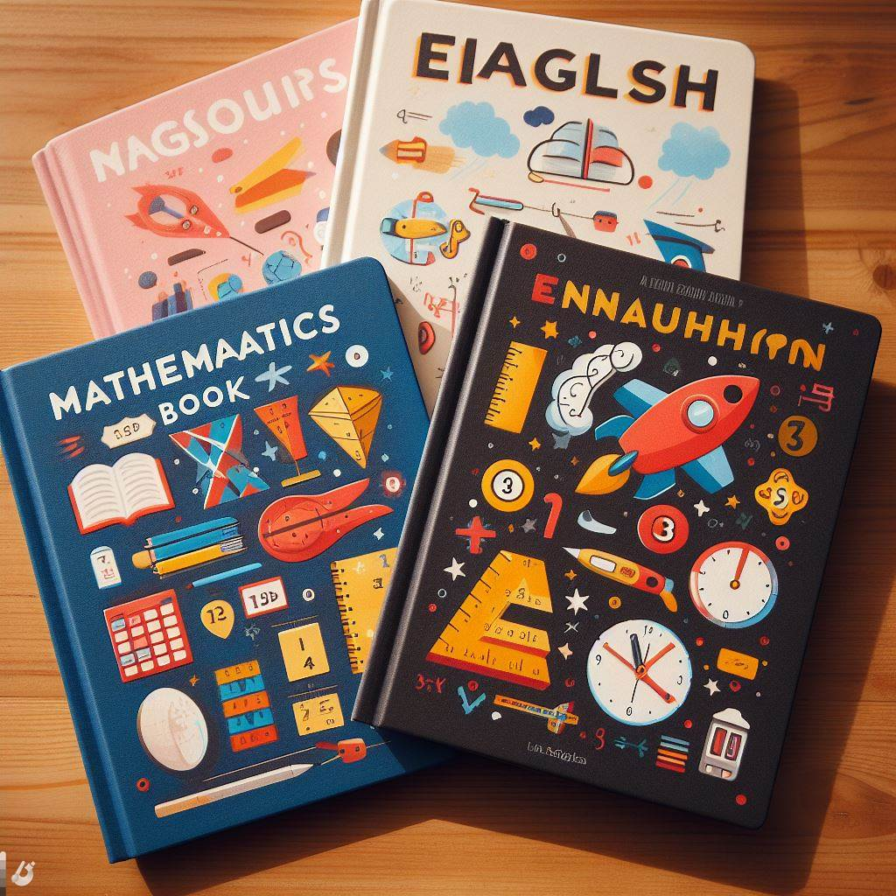

Programa Educativo Bilingüe- Primaria
Información General de la Institución

- La institución está acreditada por el Ministerio de Educación Pública, Resolución #403-2019-MEP.
- Ofrecen niveles del 1º al 5º, dependiendo de la demanda de matrícula.
- Los grupos son pequeños (máximo de 10 a 13 estudiantes) para una atención personalizada.
- El horario de clases es de lunes a viernes, de 8:00 a.m. a 3:20 p.m. Los niños son bienvenidos desde las 6:45 a.m.
- La institución cuenta con instalaciones amplias y nuevas.
- Ofrecen un ambiente seguro y de confianza con amplia experiencia.
Programa Académico

- Enseñan inglés en todos los niveles, con un enfoque en la integración de las habilidades de hablar, escuchar, leer y escribir.
- Las materias de primaria incluyen Español, Matemáticas, Estudios Sociales, Ciencias, Inglés, Educación Física, Música, Habilidades para la vida, Creatividad y Arte, y Trabajo Social Estudiantil.
- Su programa incluye Neuropedagogía, Tecnología, Aprendizaje basado en Proyectos y STEAM, que están integrados con las materias básicas.
- El personal docente está certificado en las áreas mencionadas anteriormente.
- El desarrollo de las TIC está integrado con cada materia.
Servicios Adicionales

- Ofrecen talleres extracurriculares en Cocina, Danza, Taekwondo y Lesco.
- Tienen un equipo interdisciplinario de profesionales para necesidades de apoyo especial, incluyendo terapia del lenguaje, especialistas en TEA y psicopedagogía.
- Proporcionan servicios de guardería para niños de 6 a 12 años.
- Proporcionan servicios de transporte exclusivos para la institución.